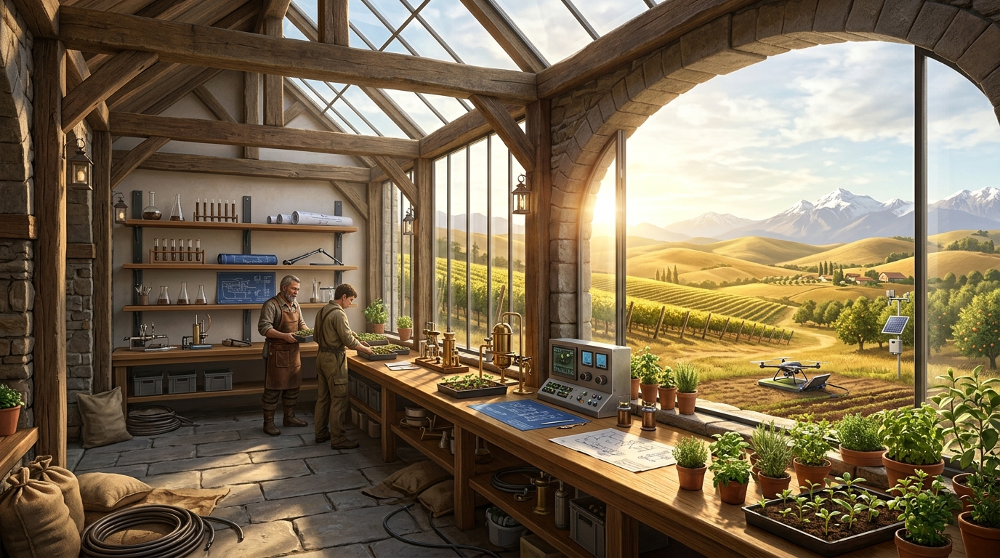
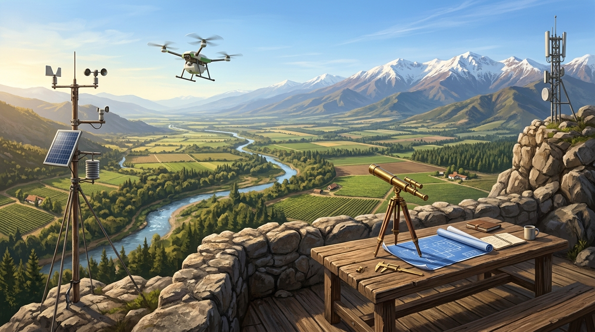
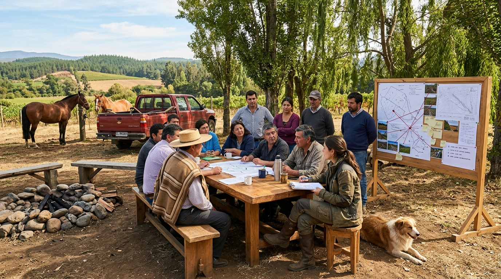
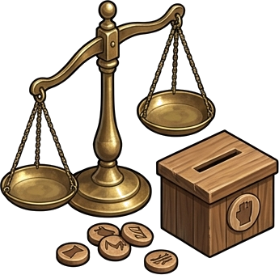
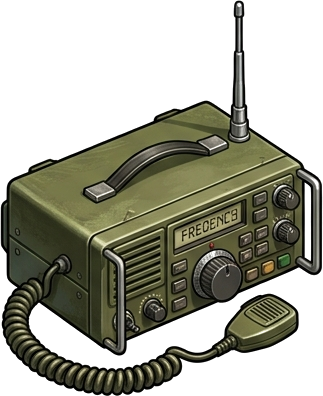
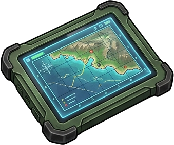

AGRITWIN
SUITE
Micro-gestión regenerativa de predio, gobernanza vecinal comunitaria y balance hidrológico macro de cuenca integrados en un solo gemelo biofísico.

Micro-gestión regenerativa en 8 potreros, diseño hidrológico de infiltración y monitoreo IoT con 15 sondas FDR en tiempo real.

Mirador panorámico y dinámica de crecidas del Río Longaví, estrés evaporativo TWI, red de APRs y alertas piro-climáticas FWI.

Espacio de diálogo y gobernanza: faja cortafuego compartida de 45m, tranque amortiguador de 18.500 m³ y servidumbres comunitarias.
Visualización de flujos biofísicos de agua, biomasa, energía solar y forraje entre Fundo Meniel y la corona de 7 vecinos contiguos.
Selecciona una herramienta por categoría o utiliza los accesos rápidos ejecutivos.
Monitor multi-predial, sondas FDR y mapas de cuenca.
Generación de informes de dos páginas y catastro legal.
Debate de 9 expertos y simuladores interactivos de aprendizaje.
Monitor unificado de telemetría multi-predial, balance hídrico, piro-resiliencia canónica Van Wagner y ejecución presupuestaria de proyectos territoriales.
El visor de predio (Predio Twin), el de vecinos (Mesa Vecinal) y el de cuenca (Cerro Longaví) operan como ramas independientes sin redirecciones directas cruzadas. Todo dato y cambio de contexto se gestiona y conmuta a través del Tronco Hub.
Estado comparativo de humedad edáfica, piro-riesgo individual, estado de cortafuegos y derechos de agua.
| Predio | Rol SII | Área (ha) | Bioma / Cultivo | Humedad Suelo | FWI Local | Faja Cortafuego | Derechos DGA | Acción |
|---|
Frente de fuego potencial en ladera andina (Pino Insigne). Se mantiene activa la faja de 45m de Fundo Meniel como buffer crítico de contención.
Caudal actual: 124.5 m³/s (Nivel Seguro). Tranque Keyline habilitado con capacidad libre de 8.200 m³ para absorción de pulsos torrenciales.
9/10 propietarios han depositado su firma digital en el pacto de servidumbre mutua. Próxima asamblea programada en Fundo Meniel.
Deslindes, servidumbres de paso y matriz de colindancia entre fundos agrícolas y plantaciones de pino.
Acuerdos de manejo de combustible en deslindes: faja de amortiguación de 45m, pastoreo y limpieza coordinada.
Tus indicadores de balance hídrico (18.500 m³ retenidos), índice FWI bajo y curvas Keyline para defender en la asamblea.

Asignación de 100 créditos de voz por predio. Simula y vota mociones de faja cortafuegos, red LoRa y compuertas comunes.

Canal de enlace VHF (146.520 MHz) para aviso inmediato de columnas de humo, corte de canales y coordinación de rondas.
Historial de actas de asambleas pasadas, mediación comunitaria de aguas y cronograma de sesiones de la junta vecinal.
Selecciona un predio para activar su Maletín Predial en la asamblea o presiona "Volar en Mapa" para inspeccionar su geometría en GIS:
24.8 ha • PRV & Keyline
68.4 ha • Arroz & Crecidas
112.5 ha • Forestal Pino
84.0 ha • Trigo & Avena
36.2 ha • Arándanos & Mora
28.0 ha • Berries Orgánicos
55.0 ha • Bosque & Miel
18.5 ha • Frutales & Tranque
38.0 ha • Uva Torontel
150.0 ha • Cabecera Andina
Métricas biofísicas individuales que el productor pone sobre la mesa para justificar inversiones compartidas o derechos de agua:
Variables ambientales macro que determinan el riesgo y las restricciones colectivas que los vecinos deben considerar al acordar obras:
Mociones de financiamiento compartido y acuerdos vinculantes con voto ponderado por mayordomía de suelo (Voice Credits):
Rol 142-88 (Meniel) y Rol 142-12 (San José) establecen servidumbre de desagüe ecológico hacia canal matriz con aforo continuo telemétrico.
Rol 142-88 (Meniel) y Rol 143-05 (Los Boldos) pactan franja de exclusión de combustible fino con pastoreo de ganado ovino y desmalezado anual.
Prioridad de llenado de estanques para consumo humano de 30 familias en APR Copihue durante meses de sequía máxima (Enero-Marzo).
Monitoreo de ráfagas secas del este, combustible fino FFMC y frente de llama Rothermel sobre plantaciones contiguas.
Ortomosaico multiespectral, clasificación de suelos de la cuenca (agrícola, forestal, nativo) y vigor NDVI.
Vuela de inmediato a Fundo Meniel, Embalse Bullileo, Retiro Pueblo, Parral Centro o el Cruce del Río Longaví.
Portafolio de 4 obras territoriales: Tranque Bullileo 2, Faja Cortafuegos Borde Cordillera y Reforestación Ribereña.

Caudal Longaví (124.5 m³/s), amortiguación con Keyline, batimetría Bullileo y simulador de anegamiento T=10/50/100.
Cobertura LoRaWAN y niveles freáticos de los 5 Comités de Agua Potable Rural (Retiro, Copihue, Romeral, Villaseca).
Puntos neurálgicos de monitoreo en la cuenca. Haz clic en cualquiera para volar inmediatamente en el visor cartográfico:
Punto cero de infiltración subsuperficial: Tranque Keyline de 18.500 m³, 15 sondas FDR y barrera verde cortafuegos.
Capacidad máxima de 60M m³: principal regulador cordillerano de la cuenca del Río Bullileo y afluente del Longaví.
Nodo urbano densificado y confluencia de canales matrices de riego: 42.000 habitantes en zona de baja cota.
Corazón del valle cerealero: monitoreo de napas freáticas de los 5 Comités de Agua Potable Rural (APR) y cultivos de arroz.
Perspectiva completa de la macro-cuenca Maule Sur: gradiente desde la alta cordillera andina hasta los llanos de secano interior.
Estación fluviométrica DGA Quilaimo: simulación de áreas de anegamiento fluvial y amortiguación por Keyline y esteros.
Caudal real 124.5 m³/s, tiempo de concentración tc=6.2h, batimetría Bullileo y amortiguación por tranques Keyline.
Índice FWI 24 (Bajo hoy), combustible fino FFMC, simulador Rothermel de frente de llama y franjas limpias de 45m.
5 boyas agrometeorológicas terrestres enlazadas a 5 comités APR (3.220 familias) para alerta temprana de sequía y abatimiento.
Fundo Meniel • Residencial & Fotovoltaico
Centro habitacional y neurálgico del Fundo Meniel. Concentra el sistema de generación fotovoltaica con 36 paneles solares de 500Wp, inversor híbrido trifásico y banco de acumulación en litio LiFePO4. Alimenta las bombas de impulsión de riego, telecomunicaciones LoRaWAN de las 15 sondas FDR y abastece confort térmico pasivo.
Inspección estratigráfica multinivel en suelo, balance evapotranspirativo FAO-56 y dinámica de napas freáticas APR.
Histórico de 24 horas con bandas de Capacidad de Campo (CC) y Punto de Marchitez (PMP)
Centro formal de documentación técnica: Arquitectura Multiescala con Diagramas Mermaid interactivos, Motores Algorítmicos Biofísicos ejecutables, Datasets Geoespaciales Vectoriales y Mosaico Catastral Comunitario.
Explora los 6 módulos arquitectónicos en el panel izquierdo. A la derecha se desplegarán diagramas Mermaid vectoriales de alta definición, tablas técnicas con flujos de datos y especificaciones de protocolos.
Integración multiescala sin fisuras cognitivas entre la micro-física predial, la vecindad rural y la macro-cuenca.
| Escala / Momento | Resolución Espacial | Motor Computacional | Variables Clave | Frecuencia |
|---|---|---|---|---|
| 1. Micro-Predial | Centimétrica (12.8 ha) | Three.js WebGL / Shaders | Humedad FDR (10/30/60 cm), MS/ha potreros | 15 min (IoT) |
| 2. Vecinal Mosaico | Predial SII (508 ha) | Matriz Relacional / Smart Contract | Voice Credits, Fajas Cortafuego 45m | Por Evento DAO |
| 3. Macro-Cuenca | Regional (122.070 ha) | Leaflet GIS + DEM Copernicus | Q Río Longaví, FWI Puelche, Pozos APR | 1 hora (DGA/Meteo) |
Control GIS & Topografía Viva